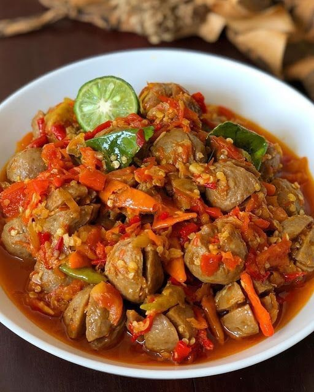
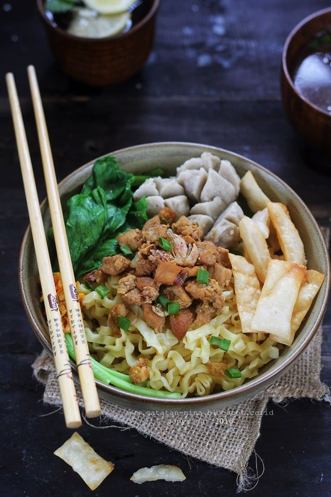
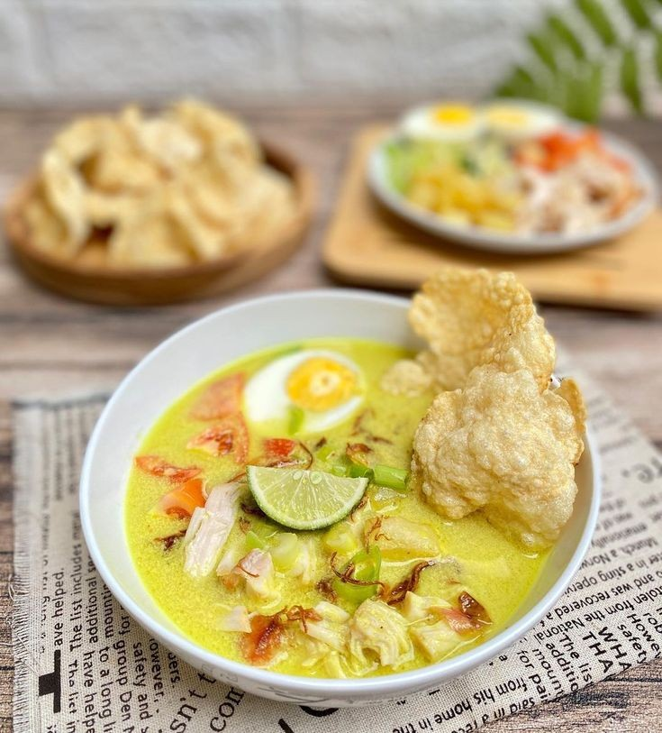

<!doctype html>
<html lang="en">
  <head>
    <meta charset="utf-8">
    <meta name="viewport" content="width=device-width, initial-scale=1">
    <title>Bootstrap demo</title>
    <link href="https://cdn.jsdelivr.net/npm/bootstrap@5.2.3/dist/css/bootstrap.min.css" rel="stylesheet" integrity="sha384-rbsA2VBKQhggwzxH7pPCaAqO46MgnOM80zW1RWuH61DGLwZJEdK2Kadq2F9CUG65" crossorigin="anonymous">
  </head>
  <body>
    <script src="https://cdn.jsdelivr.net/npm/bootstrap@5.2.3/dist/js/bootstrap.bundle.min.js" integrity="sha384-kenU1KFdBIe4zVF0s0G1M5b4hcpxyD9F7jL+jjXkk+Q2h455rYXK/7HAuoJl+0I4" crossorigin="anonymous"></script>
  </body>
</html>

<nav class="navbar navbar-expand-lg bg-light">
  <div class="container-fluid">
    <a class="navbar-brand" href="#">Makanan Kekinian</a>
    <button class="navbar-toggler" type="button" data-bs-toggle="collapse" data-bs-target="#navbarSupportedContent" aria-controls="navbarSupportedContent" aria-expanded="false" aria-label="Toggle navigation">
      <span class="navbar-toggler-icon"></span>
    </button>
    <div class="collapse navbar-collapse" id="navbarSupportedContent">
      <ul class="navbar-nav me-auto mb-2 mb-lg-0">
        <li class="nav-item">
          <a class="nav-link active" aria-current="page" href="#">Home</a>
        </li>
        <li class="nav-item">
          <a class="nav-link" href="#">Diskon</a>
        </li>
        <li class="nav-item dropdown">
          <a class="nav-link dropdown-toggle" href="#" role="button" data-bs-toggle="dropdown" aria-expanded="false">
            Menu
          </a>
          <ul class="dropdown-menu">
            <li><a class="dropdown-item" href="#">Mie ayam</a></li>
            <li><a class="dropdown-item" href="#">Soto ayam</a></li>
            <li><hr class="dropdown-divider"></li>
            <li><a class="dropdown-item" href="#">Bakso</a></li>
          </ul>
        </li>
        <li class="nav-item">
          <a class="nav-link disabled"></a>
        </li>
      </ul>
      <form class="d-flex" role="search">
        <input class="form-control me-2" type="search" placeholder="Search" aria-label="Search">
        <button class="btn btn-outline-success" type="submit">Search</button>
      </form>
    </div>
  </div>
</nav>

<div id="carouselExampleControls" class="carousel slide" data-bs-ride="carousel">
  <div class="carousel-inner">
    <div class="carousel-item active">
      
    </div>
    <div class="carousel-item">
      
    </div>
    <div class="carousel-item">
      
    </div>
  </div>
  <button class="carousel-control-prev" type="button" data-bs-target="#carouselExampleControls" data-bs-slide="prev">
    <span class="carousel-control-prev-icon" aria-hidden="true"></span>
    <span class="visually-hidden">Previous</span>
  </button>
  <button class="carousel-control-next" type="button" data-bs-target="#carouselExampleControls" data-bs-slide="next">
    <span class="carousel-control-next-icon" aria-hidden="true"></span>
    <span class="visually-hidden">Next</span>
  </button>
</div>

<div class="container text-center">
  <div class="row">
    <div class="col">
      <div class="card" style="width: 18rem;">
  
  <div class="card-body">
    <h5 class="card-title">Mie ayam</h5>
    <p class="card-text">Mie ayam ini awalnya adalah bakmi, hidangan mie khas Tiongkok Selatan, khususnya daerah Fujian dan Guandong. Hidangan ini mulai masuk ke Indonesia karena banyaknya masyarakat asal China yang merantau dan menetap di Indonesia.</p>
    <a href="#" class="btn btn-primary">Pesan</a>
  </div>
</div>
    </div>
    <div class="col">
<div class="card" style="width: 18rem;">
  
  <div class="card-body">
    <h5 class="card-title">Soto ayam</h5>
    <p class="card-text">Soto menjadi salah satu jenis kuliner terpopuler di Nusantara serta punya banyak ragam dan varian di masing-masing daerah. Tapi benarkah soto adalah makanan asli Indonesia? Bagaimana asal-usul dan sejarah sajian khas berkuah dengan berbagai isian ini.</p>
    <a href="#" class="btn btn-primary">Pesan</a>
  </div>
</div>
    </div>
    <div class="col">
<div class="card" style="width: 18rem;">
  
  <div class="card-body">
    <h5 class="card-title">Bakso</h5>
    <p class="card-text">Bakso adalah salah satu hidangan Indonesia yang masih memiliki akar dari seni kuliner Tionghoa-Indonesia. Hal ini ditunjukkan dari istilah bakso berasal dari kata Bak-So, dalam Bahasa Hokkien yang secara harfiah berarti 'daging giling'..</p>
    <a href="#" class="btn btn-primary">Pesan</a>
  </div>
</div>
    </div>
  </div>
</div>